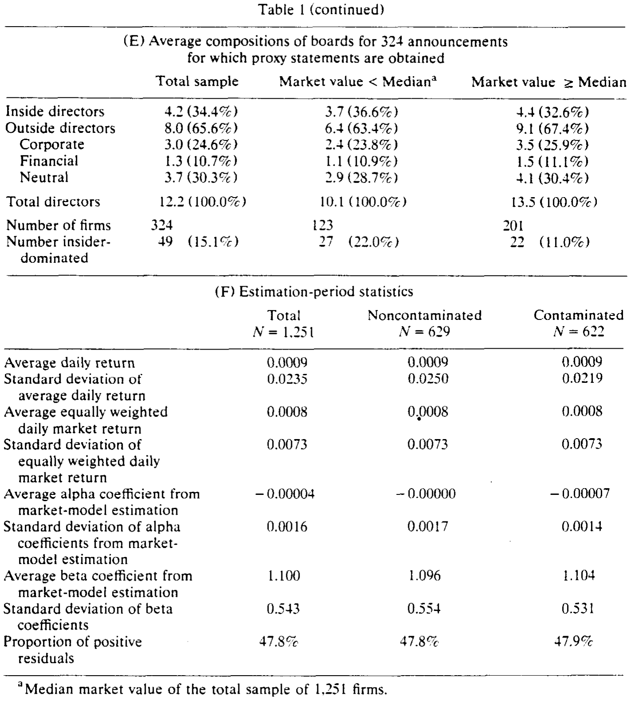
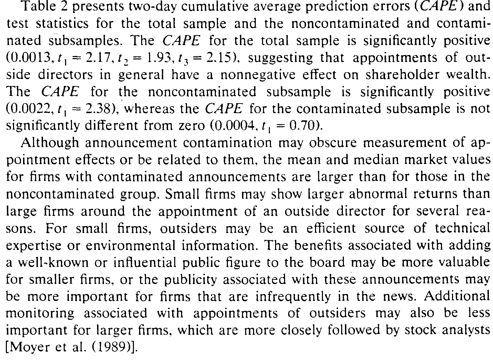
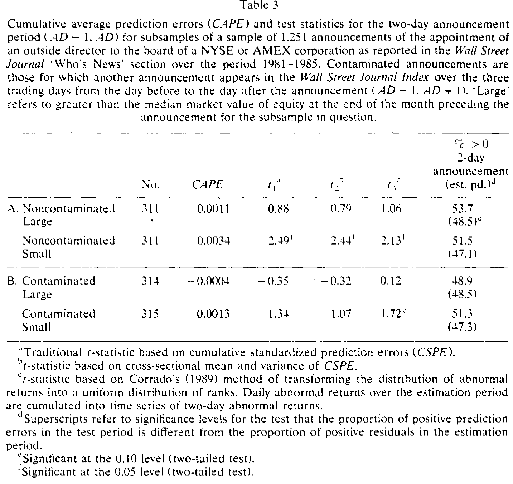
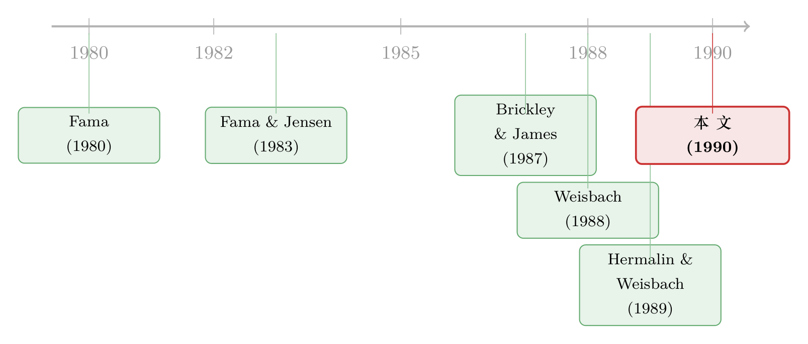

老板亲手挑的「监督者」，市场为什么还肯买账？
本文读的是 Rosenstein & Wyatt (1990, Journal of Financial Economics)：尽管外部董事大多是 CEO 自己挑进来的，但宣布任命一位外部董事，平均仍带来 +0.13%（干净子样本 +0.22%，t = 2.38） 的显著正向超额收益。市场用真金白银投了一票——它相信，即便选人的是管理层，外部董事仍是为股东而设的。
1 一个让人犯疑的悖论
先抛一个看上去自相矛盾的问题。
公司治理的教科书告诉我们，外部董事 (outside director) 是盯着管理层的那双「眼睛」——他们既是监督者 (monitor)，又能带来「相关的互补知识」[Fama and Jensen (1983)]。可现实里，这双眼睛是谁安排上岗的？答案令人尴尬：是被监督的人自己。Mace (1986)、Vancil (1987)、Waldo (1985) 反复指出，绝大多数新董事其实是 CEO 推荐进来的——名义上股东投票选举，实际上股东只是「事后追认」董事会早已敲定的人选。
于是一个自然的怀疑就冒出来了：让被告自己挑陪审团，这陪审团还能独立判案吗？一个靠 CEO 提携才坐上席位的外部董事，会不会只是「自己人」，甚至沦为管理层巩固地位 (entrenchment) 的帮凶？
学界对此分歧很深。一派——Demsetz (1983)、Hart (1983)——干脆认为董事会是多余的：市场本身（接管市场、经理人市场）已经把管理层和股东的利益绑在一起了，要董事会何用。另一派则坚信董事会是治理的核心。早期直接检验「董事会构成 → 公司业绩」的研究 [Vance (1964)、MacAvoy et al. (1983)、Baysinger and Butler (1985)] 结论却是一锅混账，谁也说服不了谁。
这篇论文的高明之处，在于它绕开了「构成对业绩」这道纠缠不清的相关性难题，换了一个干净得多的问法。
2 把问题翻译成一桩事件
接着，一个自然的转身是：与其问「董事会里外部人多了，公司是不是更好」，不如直接问——当市场第一次听说「某公司新添了一位外部董事」时，股价怎么反应？
这就把一个静态的、充满内生性的横截面问题，变成了一桩可以用 事件研究 (event study) 检验的动态事件。如果市场认为这位外部董事是来「监督、添智」的，股价该涨；如果市场担心他是 CEO 拉来「站台、抱团」的，股价该跌或不动。股价反应本身，就是市场对「这次任命到底是好是坏」的实时投票。
作者的样本设计也透着克制。他们只挑那些一次只任命一位外部董事、且同时没有任命任何内部董事的公告。为什么这么苛刻？因为一次塞进好几位董事，可能本身就在释放「公司要大改战略」的信号；而任命一位内部董事，往往暗示 CEO 准备交班 [Weisbach (1988)]。把这两种「信息污染」掐掉，留下的才是相对纯粹的「外部董事任命」这一件事。
样本最终来自 1981–1985 年 华尔街日报「Who's News」栏目里、且公司在 CRSP 日度数据库里的全部此类公告，并经三道筛子过滤：
- 公告若被人事变动、并购等其他消息污染，剔除；
- 公告前后（AD−170 到 AD+20）若有任何缺失收益（可能意味着停牌），剔除；
- 若
SEC的 13D 文件显示新董事或其关联方持股 ≥5%，说明这极可能是大股东而非管理层安排的，剔除——这一步至关重要，因为论文要检验的恰恰是「管理层主动选人」的情形。
最终样本 1,251 个公告。其中再切出一个「无污染」子样本 622 个——这些公告在事件窗（AD−1 到 AD+1）三天里，公司没有任何其他消息上《华尔街日报》索引。剩下 629 个则是「污染」组。
3 这双「眼睛」其实早已是多数
但真正关键的一步，藏在一个容易被忽略的事实里。
作者从 324 份能拿到的委托书 (proxy statement) 里，还原了任命之前的董事会构成。结果如表 1（续）所示：平均一个董事会有 12.2 名成员，其中内部董事只有 4.2 人（34.4%），外部董事高达 8.0 人（65.6%）。换句话说——在新董事进来之前，绝大多数董事会就已经被外部人在数量上主导了。

Table I: (continued)
这就把悖论推到了极致：既然外部董事早已是多数，再添一位，边际上还能值几个钱？按「监督」逻辑，从 8 个外部董事变成 9 个，监督力度的增量微乎其微，市场理应无动于衷。如果股价仍然显著上涨，那说明市场看重的，恐怕不只是「多一双眼睛」那么简单。
带着这个悬念，我们来看核心结果。
4 识别策略：三把尺子量同一件事
作者用标准的 市场模型 (market model) 来估计 异常收益 (abnormal return)：以 AD−170 到 AD−21 这 150 个交易日做参数估计，CRSP 等权指数作市场基准，焦点落在 AD−1 和 AD 这两个交易日上。
为什么用三个检验统计量？因为事件研究的「显著性」最怕被三件事坑：方差在事件期突然变大、横截面分布偏斜、以及非参数检验在偏斜下失灵。作者于是三管齐下。
第一把尺子是传统的、基于两日累计标准化预测误差 (cumulative standardized prediction error, CSPE) 的 t 统计量：
$$ t_1 = \frac{\dfrac{1}{N}\sum_{i=1}^{N} CSPE_i}{\left[\,2(T-2)\,/\,N(T-4)\,\right]^{1/2}} $$
其中 \(T = 150\) 为估计期天数，\(N\) 为样本数。它的分母是在「方差恒定」假设下推出的理论标准误。
可 Brown and Warner (1985) 早就警告过：公告日附近方差往往会跳升，硬套理论标准误会让你错误地拒绝原假设。所以第二把尺子（\(t_2\)）改用 CSPE 的横截面标准差做分母——方差真要是涨了，这把尺子会自动「认账」。Mesumeci, Poulsen, and Boehmer (1990) 的模拟显示，它在方差跳升时设定良好、且更有效。第三把尺子（\(t_3\)）则是 Corrado (1989) 的秩检验 (rank test)：把估计期和事件期的预测误差统统转成秩，无论原分布多偏斜，秩都服从均匀分布，从而把偏斜这个坑也填上。
这三把尺子若指向同一结论，结果就稳了。而作者的担心不是多余的——他们确实发现，事件期预测误差的方差，相对估计期显著上升：无污染组高 16.1%，污染组更高达 40.1%（均在 5% 水平显著）。这正是为什么必须用对方差敏感的统计量。
5 主要结果：小，但确实是正的
来看表 2。全样本的两日 累计平均预测误差 (cumulative average prediction error, CAPE) 为 0.0013，三把尺子分别给出 t₁ = 2.17、t₂ = 1.93、t₃ = 2.15——三票里两票显著、一票临界。

Table 2: presents two-day cumulative average prediction errors (CAPE) and
但真正干净的证据在无污染子样本：CAPE = 0.0022，t₁ = 2.38、t₂ = 2.23、t₃ = 2.16，三把尺子齐刷刷显著。反观污染子样本，CAPE 只有 0.0004，t₁ = 0.70，与零无异。这个对比恰恰说明：把那些混入其他消息的公告剔掉后，「外部董事任命」这件事本身的正向效应，反而更清晰地浮了出来。
于是反转出现了：哪怕董事会早已被外部人主导，哪怕选人的是 CEO 自己，市场依然给「再添一位外部董事」标出了一个虽小却显著为正的价签。这与「管理层借外部董事巩固地位」的故事正好相反——若真是抱团固权，股价该跌才对。
那么，这 0.2% 究竟从哪儿来？作者顺势追问：是不是某些「类型」的外部董事更值钱？他们把董事按主业分成三类——金融外部人（银行、投行、保险等资金供给方）、公司外部人（其他公司的高管）、中性外部人（学者、律师、退休高管、政府官员等）。结果是：没有任何一类显著地比其他类更有价值，也没有任何一类被系统性地用来固权。值不值钱，似乎不取决于他从事什么职业。
接着是规模。表 3 把无污染与污染样本各自再按市值切成大、小两组。结果颇为耐人寻味：

Table 3
无污染样本里，小公司的 CAPE 高达 0.0034（t₁ = 2.49）且显著，大公司只有 0.0011（t₁ = 0.88）不显著——尽管两者均值之差并未通过显著性检验。为什么小公司效应更强？作者给了几条直觉：对小公司而言，外部人可能是技术专长或行业信息的高效来源；请来一位知名公众人物的「名人效应」对小公司更值钱；而大公司本就被分析师紧盯 [Moyer et al. (1989)]，额外的监督边际价值更低。
最后，作者还堵了一个漏洞：会不会这点正收益其实是年度股东大会效应蹭来的？Brickley (1986) 发现年会附近两日有 0.56% 的异常收益。作者于是把 176 个能定位日期的无污染公告拆开看——26 个出现在年会之后、150 个在委托书寄出之前。结果，年会之后才公布的任命 CAPE = 0.0012（t = 0.03），并不比年会前的 0.0027（t = 1.22）更高。年会效应并没有在驱动结果；恰恰相反，年会后才登报的那些「旧闻」（市场早已知情）反而可能低估了真实的任命效应。
6 文献脉络
把这条线捋一捋。最初是一场理论上的对峙：Demsetz (1983) 与 Hart (1983) 认为市场机制足以约束管理层，董事会形同虚设；而 Fama (1980)、Fama and Jensen (1983) 则把外部董事抬到治理核心的位置，视其为管理层的监督者与互补知识的提供者。

理论争不出结果，实证就接力。早期直接回归「板构成 → 业绩」的工作 [Vance (1964)、MacAvoy et al. (1983)、Baysinger and Butler (1985)] 结论混乱。直到 1980 年代末，三篇论文带来了更扎实的证据：Brickley and James (1987) 发现，在限制银行并购的州，银行董事会里外部人比例显著更低，暗示外部董事在评估接管提议、约束管理层在职消费上确有作用；Weisbach (1988) 发现，外部董事占多数的公司里，CEO 更替与公司业绩的相关性更高（关于这条线，可参见《用脚投票：被炒掉的 CEO 背后，是谁先悄悄离场》）；Hermalin and Weisbach (1989) 则发现公司业绩变差或退出某行业后，更可能引入外部人。
本文（Rosenstein and Wyatt, 1990）在这条脉络里补上了关键一环：前人多看「存量」（董事会构成与业绩/更替的关联），它第一次用大样本事件研究，直接量出了「增量」（新任命一位外部董事）的股东财富效应，并把「管理层选人是否损害股东」这个最尖锐的问题，逼到了股价反应面前。后来的研究——比如检验外部董事在收购中的作用、董事会规模与构成如何随公司生命周期演化——很大程度上是沿着这条路继续走的（可参见《董事会里坐着谁，决定了一次收购值多少钱——但「独立」也会过头》，以及《董事会不是越大越好，也不是越独立越好》）。
7 评论与延伸（Q&A + 研究方向）
(a) 几个可能的疑问
Q：0.13%～0.22% 这么小的效应，真的有意义吗？
在事件研究里，两日
0.2%的异常收益并不算小——别忘了这只是「再添一位外部董事」这一件边际事件，而且发生在董事会早已被外部人主导的背景下。它的意义不在量级，而在符号与方向：在「管理层选人」最该出问题的地方，市场给的却是正号。这本身就否证了「外部董事=固权工具」的悲观假说。
Q：既然 CEO 选人，怎么能说市场反应证明了外部董事「独立」？
严格说，论文证明的不是「独立」，而是「有益」——市场预期这位董事带来的好处（监督+智识）超过潜在成本（固权+低效决策）。作者也诚实地提出了一个替代解释：任命外部董事或许是在释放公司战略转变的信号，而非外部监督本身的价值。事件研究无法把这两者完全分开。
Q：为什么污染子样本反而不显著？这不奇怪吗？
不奇怪，恰恰相反，这是个好迹象。污染组里夹杂了其他同期消息（盈利、股利等），这些噪声把任命本身的效应淹没了；而且污染组公司市值更大（均值
$1,675Mvs 无污染组$867M），大公司效应本就更弱。两个因素叠加，污染组测不出显著效应正说明了「干净识别」的必要性。
Q：小公司效应更强，会不会只是统计上的偶然？
有这个可能。作者自己也承认，大、小公司 CAPE 均值之差并未通过显著性检验——也就是说，「小公司更高」这个结论的统计基础并不牢固，只能说是一个有趣的、与经济直觉相符的倾向，而非铁证。
Q：职业类型不影响价值，这个「零结果」可信吗？
这是个需要谨慎对待的零结果。一方面，它驳斥了「某类董事专被用来固权」的担忧；另一方面，「中性」类别把学者、律师、退休高管、政府官员一锅烩了，分类太粗，可能把真实的异质性平均掉了。作者坦言进一步细分会引入「不可接受的主观性」，但这也意味着检验力有限。
Q：用 1981–1985 的数据，结论还适用今天吗？
要小心外推。这是 萨班斯法案 (SOX) 之前、董事会独立性尚未被强制规范的年代。如今独立董事比例由监管硬性要求，「任命一位外部董事」携带的信息含量、以及市场的解读，都可能与当年大不相同。把它当作一份历史基准来读最为稳妥。
(b) 几个可能的研究问题与提案
1. 外部董事任命的债权人财富效应
【经济故事】外部董事加强监督，对股东是好消息，对债权人呢？监督若抑制管理层的冒险（资产替代），债券价值该升；但若外部董事偏向股东、推动高风险高回报项目，债券价值可能反而受损。股、债反应的符号差，能揭示外部董事究竟在替谁说话。 【可行性】中。需要把董事任命事件匹配到有公开债券交易的发行人，用
TRACE（2002 年后）或更早的债券报价数据测债券异常收益。识别上可借鉴本文的「无污染」筛法。难点是早期债券交易稀疏、流动性低。
2. 外资董事 / 外资持有人主导下的董事任命
【经济故事】当公司的大股东或新任董事来自境外机构投资者时，「监督」的含义会改变——外资可能带来更强的治理标准，也可能因信息劣势而监督失效。市场对「外资背景外部董事」的反应，能照出全球化治理的价值。 【可行性】中。需要董事的国籍/雇主信息（可从委托书、BoardEx 抓取）叠加外资持股数据。识别可用跨国并购或交叉上市作为外生冲击。数据可得但清洗成本高。
3. 董事任命与公司债流动性
【经济故事】治理改善能否传导到信用市场的流动性？一位强监督外部董事的加入，若降低了信息不对称，公司债的买卖价差应收窄。这把「治理 → 流动性」的链条接了起来。 【可行性】中高。
TRACE提供高频债券成交，董事任命日清晰可定。用事件窗内的价差/Amihud 非流动性变化做检验，识别干净。是公司治理与信用市场流动性交叉的一个自然切口。
4. 「信号」还是「监督」？用后续战略变动区分两种机制
【经济故事】本文留下的最大悬念，是任命到底是在传递「战略转向」的信号，还是在提供「外部监督」的价值。若是前者，任命后应能观察到实际的战略变动（并购、资产剥离、研发跳变）；若是后者，则应观察到管理层行为的约束（在职消费下降、CEO 更替敏感度上升）。 【可行性】高。事件后跟踪公司的真实决策与业绩，用任命后 1–3 年的战略/治理变量做检验即可，数据均为公开。是对本文核心模糊性的一个直接、可行的延伸。
参考文献
- Baysinger, B. D. and Butler, H. N. (1985). Corporate governance and the board of directors: Performance effects of changes in board composition. Journal of Law, Economics and Organization 1, 101–124.
- Brickley, J. A. (1986). Interpreting common stock returns around proxy statement disclosures and annual shareholder meetings. Journal of Financial and Quantitative Analysis 21, 343–350.
- Brickley, J. A. and James, C. M. (1987). The takeover market, corporate board composition, and ownership structure: The case of banking. Journal of Law and Economics 30, 161–180.
- Brown, S. J. and Warner, J. B. (1985). Using daily stock price returns: The case of event studies. Journal of Financial Economics 14, 3–32.
- Corrado, C. J. (1989). A nonparametric test for abnormal security price performance in event studies. Journal of Financial Economics 23, 385–395.
- Demsetz, H. (1983). The monitoring of management. In: Statement of the Business Roundtable on the American Law Institute's proposed principles of corporate governance and structure. Business Roundtable, New York.
- Fama, E. F. (1980). Agency problems and the theory of the firm. Journal of Political Economy 88, 288–307.
- Fama, E. F. and Jensen, M. C. (1983). Separation of ownership and control. Journal of Law and Economics 26, 301–325.
- Hart, O. D. (1983). The market mechanism as an incentive scheme. Bell Journal of Economics 14, 366–382.
- Hermalin, B. E. and Weisbach, M. S. (1989). The determinants of board composition. Rand Journal of Economics 19, 95–112.
- Mace, M. L. (1986). Directors: Myth and reality. Harvard Business School Press, Boston.
- MacAvoy, P. W., Cantor, S., Dana, J. and Peck, S. (1983). ALI proposals for increased control of the corporation by the board of directors: An economic analysis. Business Roundtable, New York.
- Mesumeci, J., Poulsen, A. and Boehmer, E. (1990). Event study methodology under conditions of event-induced variances. Unpublished manuscript, University of Georgia.
- Moyer, R. C., Chatfield, R. E. and Sisneros, P. M. (1989). Security analyst monitoring activity: Agency costs and information demands. Journal of Financial and Quantitative Analysis 24, 503–512.
- Rosenstein, S. and Wyatt, J. G. (1990). Outside directors, board independence, and shareholder wealth. Journal of Financial Economics 26, 175–191.
- Vance, S. C. (1964). Boards of directors: Structure and performance. University of Oregon Press, Eugene.
- Vancil, R. F. (1987). Passing the baton: Managing the process of CEO succession. Harvard Business School Press, Boston.
- Waldo, C. N. (1985). Boards of directors: Their changing roles, structure, and information needs. Quorum, New York.
- Weisbach, M. S. (1988). Outside directors and CEO turnover. Journal of Financial Economics 20, 431–460.